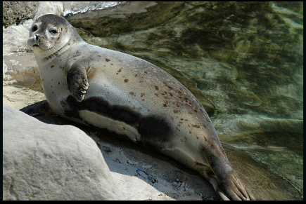

ჩვეულებრივი სელაპი (ლათ. Phoca vitulina) — ძუძუმწოვარი ცხოველი ნამდვილი სელაპების ოჯახისა. მისი სხეულის სიგრძეა 1,6–1,9 მეტრი, მასა 60–150 კილოგრამი, მამალი დედალს მცირედ აღემატება. 60–80 სანტიმეტრის სიგრძისა და 8–12 კილოგრამის ნაშიერები, როგორც წესი, დედის მუცელშივე იცვენენ თეთრ ბეწვს და, სხვა სახეობის სელაპებისგან განსხვავებით, მუქი ფერის ბეწვით იბადებიან.  საერთოდ შეფერილობის დიდი ცვალებადობა ახასიათებს, სქესობრივი დიმორფიზმი სუსტადაა გამოხატული. ზრდასრული სელაპები დაფარული არიან ყავისფერი, მოწითურო ან რუხი ბეწვით, არასწორი ფორმისა და სხვადასხვა ზომის მრავალი მუქი ლაქით, ზოგჯერ რგოლებსაც წააგვანან. ტანი სავსეა, წინა ფარფლები მოკლე და გრძელი, წვრილი, მოღუნული ბრჭყალებით შეიარაღებული. თავი მცირე ზომისა, დრუნჩი მომრგვალებული, ბოლოსკენ ქვევით ეშვება და V-ის ფორმას ემსგავსება. ვიბრისები ღია ფერისაა, გაშვერილია წინ. ჩვეულებრივი სელაპი ერთ-ერთი ყველაზე ფართოდ გავრცელებული სელაპია, ბინადრობს წყნარი და ატლანტის ოკეანეების ჩრდილოეთ ნაწილების ზომიერ და ცივ სანაპირო წყლებში, მათ შორის ყურეებსა და შიდა ზღვებში. ცნობილია მისი 5 ქვესახეობა. წყალშიც და ხმელეთზეც ცხოვრობენ მარტოდ ან მცირე ზომის შეთხელებულ ჯგუფებად. ჯვარდებიან სანაპიროებზე, ძალიან ფრთხილები და მფრთხალები არიან. იკვებებიან თევზით, თავფეხიანი მოლუსკებითა და კიბოსნაირებით. ისტორიულად ჩვეულებრივ სელაპს სარეწაო მნიშვნელობა აქვს, თუმცა დღეისათვის თითქმის არ მოიპოვებენ.